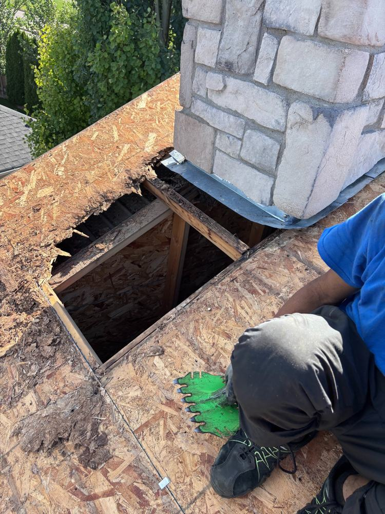

Repair or Replace? How to Tell What Your Roof Needs

This is the question roofers get asked most, and it's the one where homeowners get the worst advice — usually from someone trying to sell them one answer or the other. Here's how to think about it honestly.
When repair is the right call
Repair makes sense when the damage is localized and the rest of the roof has life left. Classic cases:
- A few shingles blown off in a windstorm, roof is otherwise healthy.
- A leak traced to one failed pipe boot or a small flashing gap.
- Minor damage on a roof under 12–15 years old.
A good repair on a mid-life roof buys you real years. There's nothing wrong with patching — it's the economical choice when the underlying roof is sound.
Red flags that mean replacement
- Age plus widespread wear. A 22-year-old roof with curling shingles across multiple slopes isn't a repair candidate — it's done. Patching it is renting time at full price.
- Repairs stacking up. If you've paid for two or three repairs in as many years, add up the bills. You're often halfway to a replacement already, with an old roof still over your head.
- Soft or sagging decking. If the wood under the shingles is soft, no shingle repair fixes that — the deck needs to come off.
- Granule loss everywhere. Bald shingles across the roof mean the UV protection is gone. It won't get better.
- Two layers already. If there's already a second layer of shingles on the roof, a third is a bad idea — too much weight, and you can't inspect the deck. It all has to come off.
The honest math
Think of it in cost-per-year. A $1,500 repair on a roof with 8 good years left costs you under $200 a year — great deal. The same $1,500 repair on a roof that's failing everywhere buys you maybe two years before the next bill, and then the next. At that point you're paying replacement money in instalments, without getting a new roof.
As a rough rule: if the repair costs more than about 25–30% of a replacement and the roof is past 75% of its expected life, replacement is usually the smarter money.
Watch out for
Be wary of anyone who gives you a firm answer from the ground without going up, or who pushes replacement on a 12-year-old roof with one bad flashing detail. And get the diagnosis in writing with photos — a trustworthy roofer can show you exactly why they're recommending what they're recommending.